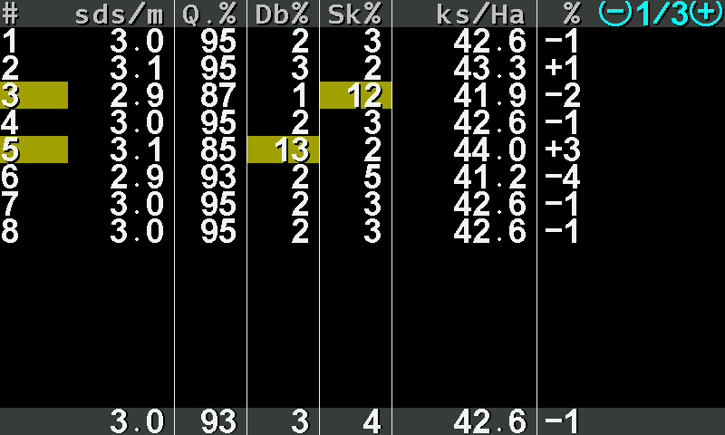
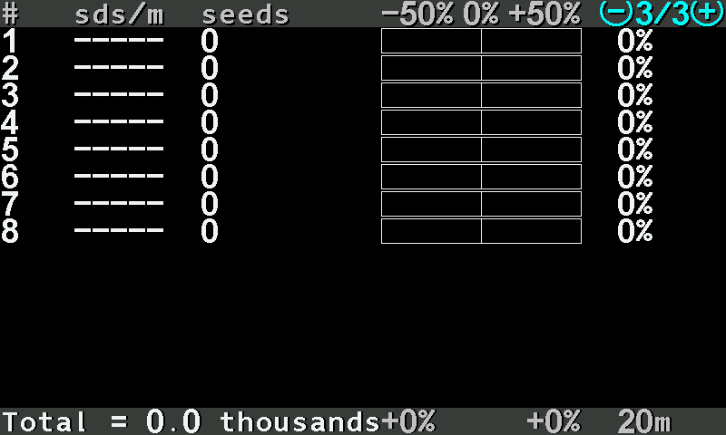

The Table screen
The readings of every section in figures — which tables your machine has, what each column means, and how to read the colours.
The Table screen shows the readings of every section as figures, one line per section. It answers the question the diagram cannot: which section exactly, and by how much. Open it from the home screen with a long swipe to the left. It has no way back: a further long swipe left takes you on to the Statistics screen and round the circle to the home screen (Working screens).
A planter in the “Precise” mode

- #. The number of the section.
- sds/m. Seeds per metre, measured now.
- Q.%. Quality — the share of seeds placed singly, as intended.
- Db%. Doubles — two seeds where one was intended.
- Sk%. Skips — a gap where a seed was intended.
- ks/Ha. The applied rate in thousands of seeds per hectare (in the second table: seeds per metre).
- %. The deviation of this section from the rate that was set.
- Table number. This table and how many there are, in the corner. Shown only when there is more than one.
- Section number on yellow. Something in this line has drifted towards its limit.
- Value on yellow. The figure that drifted.
- Totals. The same columns for the whole machine.
A value on yellow is drifting towards its limit; on red it is beyond it. A whole line in grey with ! is a section taken out of control; a line in red with × is a sensor that does not answer, with ? a device of the wrong kind.
A drill in the “Flow” mode

- #. The number of the section.
- sds/s. Seeds per second. Dashes while nothing is counted.
- Deviation scale. From −50 % through 0 to +50 %.
- Deviation bar. How far this section stands from the rate that was set.
- %. The same deviation as a figure.
- Table number. Here table 1 of 2 — the second holds the fertilizer sections.
- Lowest deviation. The section furthest below the rate.
- Highest deviation. The section furthest above the rate.
- Recalculation interval. The stretch over which the figures are gathered — “Recalculation,m” of the sensors.
Which tables your machine has
| Table | Shown when |
|---|---|
| Seed counters — seeds per second or per metre, with the deviation bars | Always. |
| Rate per area (thousands per hectare) and rate per distance (seeds per metre) | Only in the “Precise” seeding control mode. |
| Dry fertilizer | The machine has fertilizer sensors and the fertilizer control mode is not “Precise”. |
| Liquid fertilizer | The machine has liquid fertilizer sensors. |
In the “Precise” mode a planter has three seed tables: rate per area (1/3), rate per distance (2/3), and the seed counters (3/3) — the count of seeds each section has sown, beside the deviation bars, with the total for the machine at the bottom.

Working with the screen
| What you want | Gesture |
|---|---|
| Next or previous table | Long swipe right or left with two fingers |
| Scroll the lines | Swipe up or down |
| Zero the readings | Tap with two fingers — Zero the readings |
| Go on to Statistics | Long swipe left |
On large machines the rows do not fit on one page: swipe up and down to scroll them. A line that drifts turns yellow while you watch.
Something your machine does that this page does not answer? Write to support@agriwelt.com — an engineer answers.